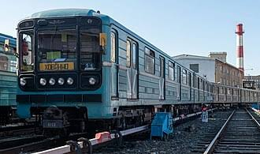
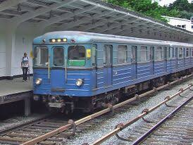
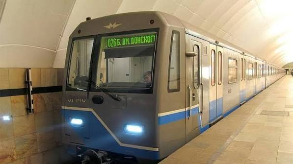
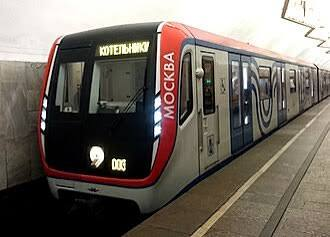

81-717 «Номерной»
Самый узнаваемый вагон метро в СНГ. Не имеет буквенного названия, только цифровой индекс. Спроектирован для работы под землёй.

Еж3
Знаменитый советский вагон метро типа «Еж». Отличается характерным продольным гофрированием бортов кузова и классическим суровым салоном.

81-760 «Ока»
Современный вагон метро с плавным ходом, системами кондиционирования и сквозным проходом через весь состав.

Вагон типа «А»
Самый первый исторический вагон метро Московского метрополитена, выпускавшийся с 1934 года. Настоящий раритет подземки.

81.765
81-765 «Москва» — Сквозной поезд метро будущего Современный и технологичный тип вагонов метро, разработанный заводом «Метровагонмаш». Главные фишки серии — сквозной межвагонный проход, широкие дверные проёмы, интерактивные карты и кондиционеры с очисткой воздуха. Помимо Москвы, его экспортные модификации успешно работают в метрополитенах Баку, Ташкента и Казани.